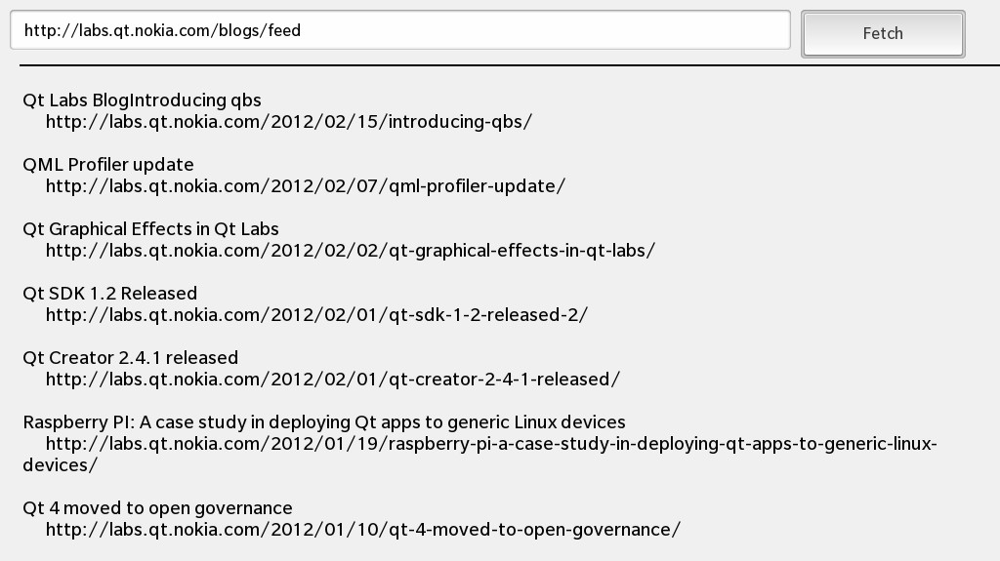

Files:
This example shows how to create an UI that displays news items from RDF news sources.

In this example we'll learn how to use the QNetworkAccessManager class to download a RSS news feed from the network and how to use QXmlStreamReader to parse the feed and extract information from it.
The sample application provides an UI where the user can enter the URL for a RSS news feed, a button the user can click to start the download of the news feed and a text area where the downloaded items are listed with title and URL.
All the business logic is encapsulated in the C++ class RSSListing which has been exported to the UI under the name '_rssListing'.
// A standard TextField for the RSS url TextField { verticalAlignment: VerticalAlignment.Center layoutProperties: StackLayoutProperties { spaceQuota: 1 } enabled: ! _rssListing.active text: _rssListing.url // Save url on input onTextChanging: _rssListing.url = text }
The TextField, where the user can enter the URL of the RSS news feed, binds against the 'url' property of the RSSListing object and updates this property whenever the user changes the text. The field will be disabled while a download operation is running and the 'active' property of the RSSListing object is true.
// A standard Button Button { verticalAlignment: VerticalAlignment.Center leftMargin: 10 layoutProperties: StackLayoutProperties { spaceQuota: -1 } enabled: ! _rssListing.active text: qsTr ("Fetch") // Fetch news items on click onClicked: _rssListing.fetch () }
The 'Fetch' button will invoke the fetch() slot of the RSSListing object when the user clicks it. Like the URL input field, the button will be disabled while a download operation is running.
// A standard TextArea for displaying items TextArea { editable: false text: _rssListing.feeds textStyle { base: SystemDefaults.TextStyles.SmallText color: Color.Black } }
The TextArea binds the 'feeds' property of the RSSListing object against its 'text' property to show the listing of extracted titles and URLs.
The RSSListing class encapsulates the downloading of the RSS news feed and the extraction of information by parsing the XML data. It contains a QNetworkAccessManager and a QXmlStreamParser as member variables which will do the low-level network communication and parsing.
RSSListing::RSSListing(QObject *parent) : QObject(parent) , m_url("http://feeds.feedburner.com/blackberry/CAxx") , m_active(false) , m_currentReply(0) { // Invoke the finished() method whenever the download job has been finished connect(&m_manager, SIGNAL(finished(QNetworkReply*)), this, SLOT(finished(QNetworkReply*))); }
In the constructor we connect the finished() signal of the QNetworkAccessManager against the finished() slot of the RSSListing object, so that we can start the parsing of the XML data when the download of the feed has been finished.
When the user clicks the 'Fetch' button, the fetch() slot will be invoked which calls get() internally:
void RSSListing::get(const QUrl &url) { QNetworkRequest request(url); if (m_currentReply) { m_currentReply->disconnect(this); m_currentReply->deleteLater(); } m_currentReply = m_manager.get(request); connect(m_currentReply, SIGNAL(readyRead()), this, SLOT(readyRead())); connect(m_currentReply, SIGNAL(metaDataChanged()), this, SLOT(metaDataChanged())); connect(m_currentReply, SIGNAL(error(QNetworkReply::NetworkError)), this, SLOT(error(QNetworkReply::NetworkError))); }
Inside this method a new download request is passed to the get() method of the QNetworkAccessManager with the URL as parameter that the user entered in the TextField in the UI. The return value is a QNetworkReply object that acts as handle to monitor the status and progress of the download operation.
We connect the readyRead() signal of the QNetworkReply against our own slot to be informed whenever new data are available from the network
void RSSListing::readyRead() { const int statusCode = m_currentReply->attribute(QNetworkRequest::HttpStatusCodeAttribute).toInt(); if (statusCode >= 200 && statusCode < 300) { const QByteArray data = m_currentReply->readAll(); m_xml.addData(data); } }
Whenever readyRead() is invoked, we read all available data from the network and pass them to the QXmlStreamReader instance.
void RSSListing::parseXml() { m_feeds.clear(); QString currentTag; QString linkString; QString titleString; while (!m_xml.atEnd()) { m_xml.readNext(); if (m_xml.isStartElement()) { if (m_xml.name() == "item") linkString = m_xml.attributes().value("rss:about").toString(); currentTag = m_xml.name().toString(); } else if (m_xml.isEndElement()) { if (m_xml.name() == "item") { m_feeds.append(QString::fromLatin1("%1\n %2\n\n").arg(titleString, linkString)); titleString.clear(); linkString.clear(); } } else if (m_xml.isCharacters() && !m_xml.isWhitespace()) { if (currentTag == "title") titleString += m_xml.text().toString(); else if (currentTag == "link") linkString += m_xml.text().toString(); } } if (m_xml.error() && m_xml.error() != QXmlStreamReader::PrematureEndOfDocumentError) { m_feeds.append( QString::fromLatin1("XML ERROR: %1: %2").arg(m_xml.lineNumber()).arg(m_xml.errorString())); } emit feedsChanged(); }
After the download operation has finished, the parseXml() method is called. This one parses the downloaded XML data and extracts the title and URL information and makes them available to the UI via the 'feeds' property.